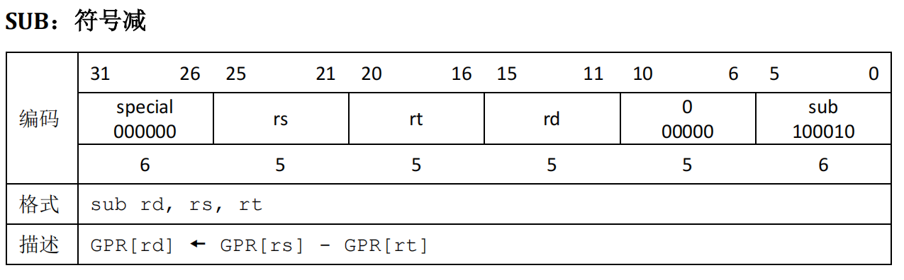
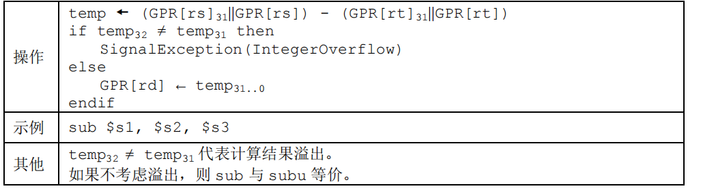
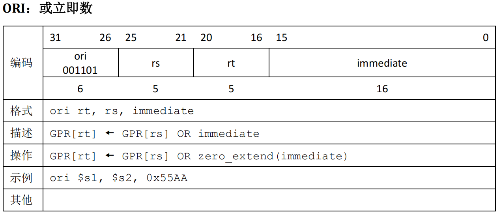
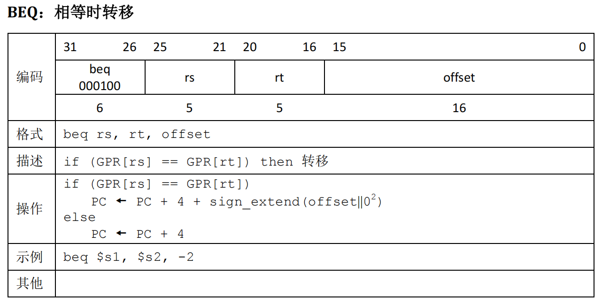
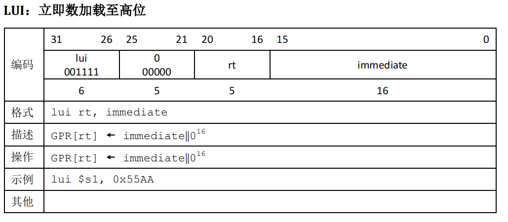
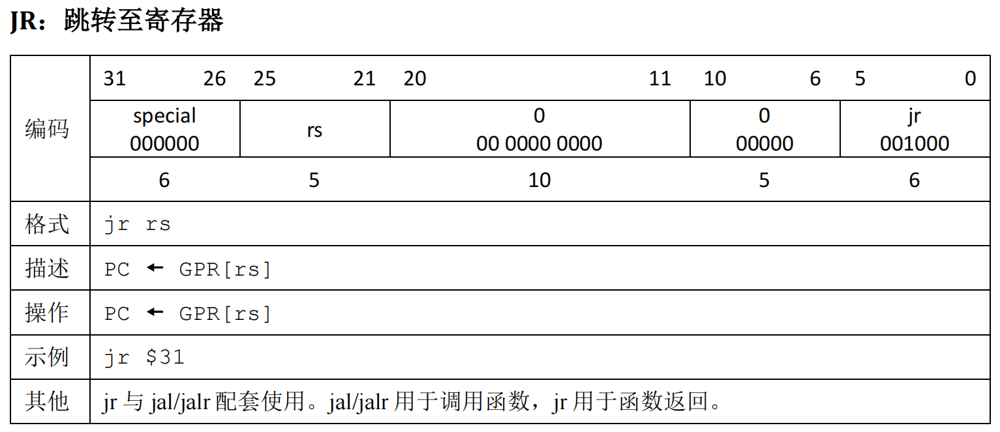

P5-CPU-设计文档

指令集
add(无符号加法，不考虑溢出)
sub(无符号减法，不考虑溢出)

ori
lw

sw
beq
lui
jal
jr
nop
控制信号
| add | sub | ori | lui | lw | sw | beq | jal | jr | ||
|---|---|---|---|---|---|---|---|---|---|---|
| RegDst<1:0> | Rd | Rd | Rt | Rt | Rt | $31 | ||||
| ALUSrc | 1 | 1 | 1 | 1 | ||||||
| DatatoReg<1:0> | ALU | ALU | ALU | ALU | DM | PC_4 | ||||
| RegWrite | 1 | 1 | 1 | 1 | 1 | 1 | ||||
| MemWrite | 1 | |||||||||
| ExtOp | 1 | 1 | ||||||||
| npc_sel | PC_4 | PC_4 | PC_4 | PC_4 | PC_4 | PC_4 | branch | jump | jr | |
| ALUop<3:0> | ADD | SUB | OR | SHIFT | ADD | ADD |
| RegDst | value |
|---|---|
| 2’b00 | Rt |
| 2’b01 | Rd |
| 2’b10 | $31 |
| 2’b11 |
| DatatoReg | value |
|---|---|
| 2’b00 | ALU |
| 2’b01 | DM |
| 2’b10 | PC_4 |
| 2’b11 |
| npc_sel | value |
|---|---|
| 2’b00 | PC_4 |
| 2’b01 | branch |
| 2’b10 | jump |
| 2’b11 | jr |
| npc_sel | value |
|---|---|
| 4’b0000 | add |
| 4’b0001 | sub |
| 4’b0010 | or |
| 4’b0011 | shift |
流水线的阻塞与转发
$T_{use}$
| add | sub | ori | lui | lw | sw | beq | jal | jr | |
|---|---|---|---|---|---|---|---|---|---|
| rs_Tuse | 1 | 1 | 1 | 1 | 1 | 1 | 0 | 0 | |
| rt_Tuse | 1 | 1 | 2 | 0 |
$T_{new}$
| add | sub | ori | lui | lw | sw | beq | jal | jr | |
|---|---|---|---|---|---|---|---|---|---|
| E_Tnew | 1 | 1 | 1 | 1 | 2 | 0 | 0 | 0 | 0 |
| M_Tnew | 0 | 0 | 0 | 0 | 1 | 0 | 0 | 0 | 0 |
| W_Tnew | 0 | 0 | 0 | 0 | 0 | 0 | 0 | 0 | 0 |
SF
| $ET_{new}$ | $MT_{new}$ | $WT_{new}$ | ||||
|---|---|---|---|---|---|---|
| $T_{use}$ | 2 | 1 | 0 | 1 | 0 | 0 |
| 0 | S | S | F | S | F | F |
| 1 | S | F | F | F | F | F |
| 2 | F | F | F | F | F | F |
Stall
1 | /*----------Stall-----------*/ |
转发
提供者:M_Reg,W_Reg
需求者:D_CMP,ALU_src,DM_WD1
2
3
4
5
6
7
8
9
10
11/*---------Forward----------*/
assign RD1_D_sel = (T_new_M == 2'b0 && A1_D == A3_M && A1_D != 5'b0 && RegWrite_M) ? 2'b10 :
(T_new_W == 2'b0 && A1_D == A3_W && A1_D != 5'b0 && RegWrite_W) ? 2'b01 : 2'b0;
assign RD2_D_sel = (T_new_M == 2'b0 && A2_D == A3_M && A2_D != 5'b0 && RegWrite_M) ? 2'b10 :
(T_new_W == 2'b0 && A2_D == A3_W && A2_D != 5'b0 && RegWrite_W) ? 2'b01 : 2'b0;
assign RD1_E_sel = (T_new_M == 2'b0 && A1_E == A3_M && A1_E != 5'b0 && RegWrite_M) ? 2'b10 :
(T_new_W == 2'b0 && A1_E == A3_W && A1_E != 5'b0 && RegWrite_W) ? 2'b01 : 2'b0;
assign RD2_E_sel = (T_new_M == 2'b0 && A2_E == A3_M && A2_E != 5'b0 && RegWrite_M) ? 2'b10 :
(T_new_W == 2'b0 && A2_E == A3_W && A2_E != 5'b0 && RegWrite_W) ? 2'b01 : 2'b0;
assign DM_WD_sel = (T_new_W == 2'b0 && A2_M == A3_W && A2_M != 5'b0 && RegWrite_W);
/*--------------------------*/
测试方案
分析模拟出所有可能的冒险情况，进行测试。
当然,有一种转发情况弱侧没有测出来，这里也给出一个示例：1
2
3
4
5
6
7
8ori $4,$0,4
add $1,$0,$0
ori $3,$0,0x1234
sw $3,100($4)
add $1,$4,$0
ori $4,$0,4
lw $2,100($4)
sw $2,100($0)
思考题
我们使用提前分支判断的方法尽早产生结果来减少因不确定而带来的开销，但实际上这种方法并非总能提高效率，请从流水线冒险的角度思考其原因并给出一个指令序列的例子。
beq提前到D级判断，使得其Tuse降为0，这显然提高了阻塞率。当beq指令前面是Tnew = 1的指令时均阻塞。
提前分支判断，虽然在某些情况下有可能损失更大，但是大多数情况下是无损失的。1
2add $1,$2,$3
beq $1,$0,label
因为延迟槽的存在，对于 jal 等需要将指令地址写入寄存器的指令，要写回 PC + 8，请思考为什么这样设计？
因为延迟槽的存在，jal后面的那条指令是一定会被执行的，跳转回来后要跳过已经执行的指令。
我们要求大家所有转发数据都来源于流水寄存器而不能是功能部件（如 DM、ALU），请思考为什么？
其一，功能部件与转发是顺序关系，有可能会导致时钟周期的长度增加；流水寄存器的转发和下一周期的操作独立并行，不影响执行速度。
其二，功能部件实时计算，数据可能不稳定。
我们为什么要使用 GPR 内部转发？该如何实现？
GRF内部转发本质上是W到D的转发。1
2
3
4/*ctrl*/
assign DM_WD_sel = (T_new_W == 2'b0 && A2_M == A3_W && A2_M != 5'b0 && RegWrite_W);
/*Data_sel*/
assign DM_WD_M_valid = (DM_WD_sel) ? GRF_WD : DM_WD_M;
我们转发时数据的需求者和供给者可能来源于哪些位置？共有哪些转发数据通路？
需求者:D级CMP的Rs_Data和Rd_Data,E级的ALU_srcA和ALU_srcB,M级的DM_WD。
供给者:M级流水线寄存器和W级流水线寄存器。
转发通路:MD,ME,WD,WE,WM
在课上测试时，我们需要你现场实现新的指令，对于这些新的指令，你可能需要在原有的数据通路上做哪些扩展或修改？提示：你可以对指令进行分类，思考每一类指令可能修改或扩展哪些位置。
可能扩展ALU的运算类型，控制信号的类型，寄存器传递的控制信号的种类，阻塞条件等。
确定你的译码方式，简要描述你的译码器架构，并思考该架构的优势以及不足。
分布式译码器,并且采取列出控制信号每种取值所对应的指令的方式。
好处是内部撰写简洁,好对应。
坏处是需要重复实例化多个控制器，控制信号对应的指令容易有遗漏。